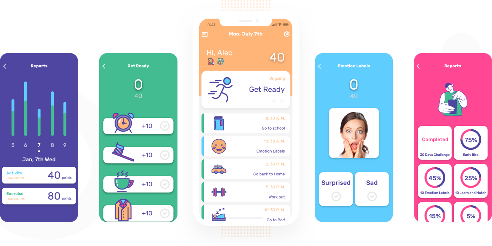
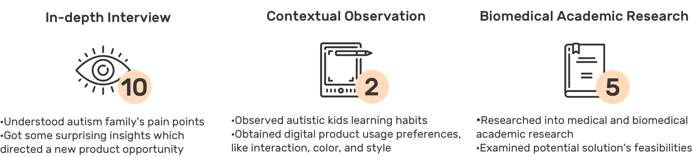
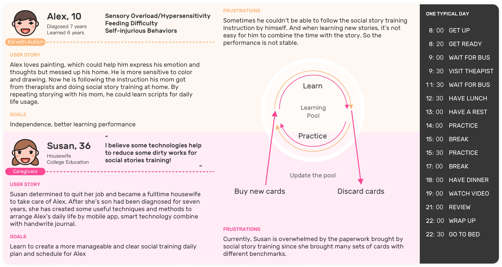
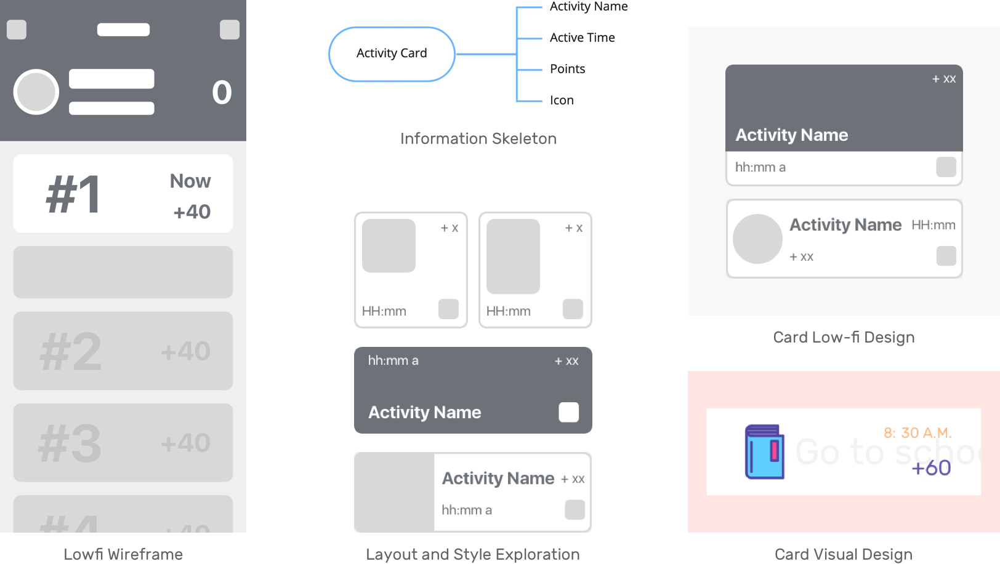
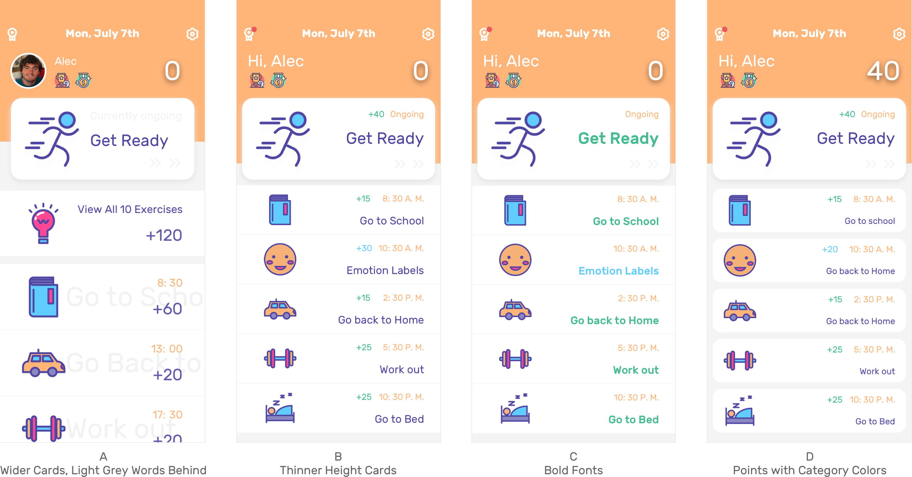
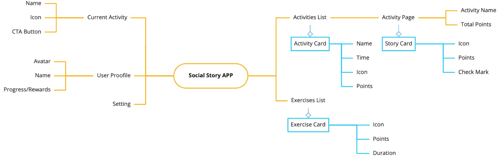
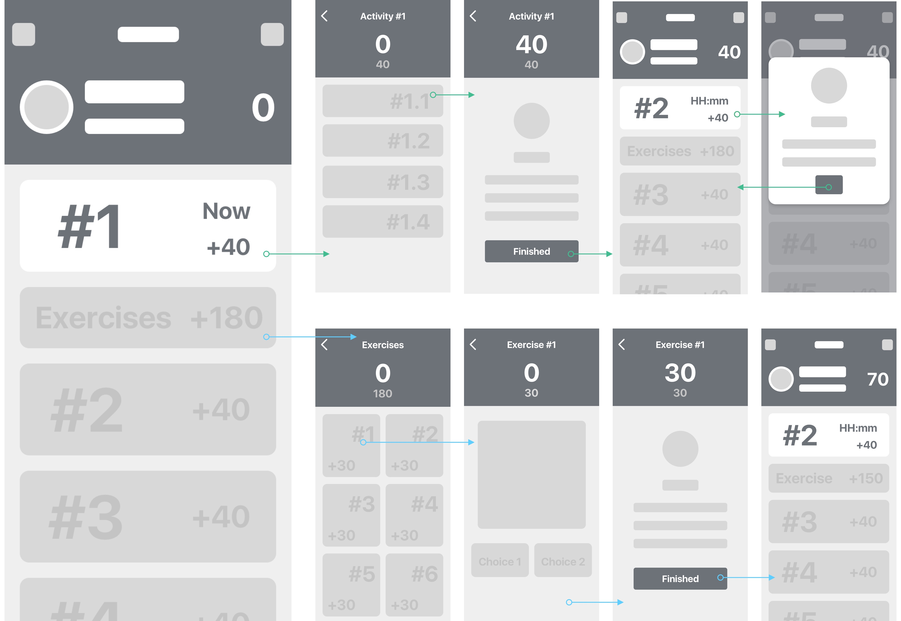

"Step by Step" is a mobile app that developed for kids with autism to do social skills training and exercises by the interactive digital experience.
DURATION
March - June 2019
TEAM
Brent Chase
(CEO & PM)
DELIVERABLES
Redlines on Zeplin
Icons and Illustrations
This mobile app is designed for kids with autism.

Gaia is a biomedical tech startup that focuses on providing better daily experience to Autism Spectrum Disorder Community, by creating wearable smart apparel and app systems.
Design Problem
Social Story Training is less effective than caregiver's expectation because of the unstandardized and manual training process.

The current methods are paper cards or poorly-designed mobile apps that are inconvenient for training on an hourly base, not durable to use, and not easy to be updated.
Design Outcome
"A more effective and efficient social skills building solution for kids with autism."
Step by step is a mobile app for Autism Social Story Training to practice autistic kid’s communication skills based on the activities caregivers pre-set and standardized exercises.
To-do List
Quick entry point for current
on-going or up-coming activity
Abstract picture-based sub-activities
Activities and sub-activities based on kid's calendar created by caregivers.
Complete sub-activity by tapping the card
Points based reward system
Let kids easily know how well they are going
Numbers are easy to recognize and compare
Gaia is building a digital service for Social Story Training to bridge the communication gap easier and get rid of the guesswork and paperwork while practicing.
My Role
I have been working on digital solutions for Autism Spectrum Disorder Community at Gaia since Dec 2018 as Design Lead.
1. Researched current social story training solutions
2. Designed a mobile app for kids with autism to provide standardized training
3. Designed a web portal for families and caregivers to create and arrange training plan
Process

EMPATHIZE/DEFINE
Identifying Problems of the Current Social Stories Training Experience
We got this idea from a user testing we did for the first products. A mother asked us if possible do we want to incorporate a function to assist in making a journal or social story into the app.
Key Findings
1. Dependency while training: The ultimate goal of doing social stories training is to make kids learn to go through all the activities by themselves and live independently in the future.
Persona and Current Journey
Currently, kids need caregivers(mainly mothers)' assistance or lead while practicing social stories.
2. Weak relation: Various/unstandardized style pictures make kids feel confused thus it's difficult to build up a relation between pictures and the real-life object.
"I have tons of used cards and I tried to sell them but felt like people would need to clean them before use. So it's complicated to reuse them."
Caregivers desire "reusable, curated for my kid(s), low efforts" solutions.

Autistic caregivers are using printed paper cards or mobile apps to construct their kid's training plan, to practice social habits and communication skills.
Paper cards are not durable, since
1. Cards are not easy to manage and store.
2. If they lose one card, the story would be less consistent.
3. When caregivers bought several sets of cards, they would have many repetitive meaning cards.
3. Asynchronous recalling learning: Remembering and recalling pictures only in training sessions make kids hard to act and use social stories in real life.
To improve the performance of stories practicing, a mobile(space) and personalized(time) day to day schedule would be helpful.

How might we design a personalized and reusable for daily-based Social Stories practice for autism kids?
IDEATE
Challenge 1:
HMW help children to practice by themselves?
Points-based System
Kids with autism need positive rewards and numbers are easy and more direct to them.
Functions Break-down List

Challenge 3:
HMW help children remember an activity while they are experiencing it?
A chronological to-do list
To achieve the goals of independence and training with real events, the to-do list concept is more straight forward and won't make kids confused about the length of time for each event.
Paper Prototyping and Concepts Testing

EXPLORE
HMW
Design an easy-to-follow to-do list to help kids complete their daily activities and exercises created by caregivers?
What should it include?
Design Requirments

The solution should have (1) lively user-app interaction, (2) customizable schedule function, (3) low learning cost/study, (4) and allow for various levels of comfort with unfamiliar touch.
Design Principles
Kids love instructive, interactive and encouraging training process.
#1 Kids Complete Activities

Practicing with a real schedule and get reward points

When at the activity time caregiver set, kids could see the [Currently On-going Activity] is active and tap it jump to [Story Page] to finish the corresponding stories.
After completed all the stories, kids earn points and could go back to the homepage.
Before the set time, when kids could only see the time of next activity on the top of the page, and it shows the time of it. But it is not tappable until the time.
Homepage Layout and Style: Single Activity Card and List Design
At this point, the two columns design is not useful and clear as the one column since it's harder for kids to recognized and left/right layout. And the one column is more intuitive for time order schedule.
And our strategy was going to provide some well-defined icons and also allow caregivers to upload icons or photos from their phones. So make the full image as the background has less expandability.
To arrange the layout of icon, time, points, and name of the activity, I chose to finalize the design as left picture and right description layout, which is familiar and easy to understand. Thus when mingling our icons and customized photos, there won't be a mess-up.
Challenge 3:
HMW help children remember an activity while they are experiencing it?
Abstract Picture Style
There is a proven theory that abstract pictures are more beneficial in building social skills, since they are helping kids to recognize a general object other than recall the relation with a specific picture.
Visual Design Iterations Based on Feedback
User Testing Learning
Plan A has a light grey title for each activity which has worse discoverability and makes kids don't understand the whole sentence.
Plan B has more compact information. But the left-right balance is worse and kids feel lose track when reading information on the right.
Plan C's color code differentiates clearly types of cards but the list is a bit compact and overwhelm.
Plan D has the clearest division so it's easier for kids to identify each activity.
Homepage Final Design
The final design shows in a todo list view. Activity and exercise respectively have different color code as blue and green. The bigger hero card is showing the ongoing or next event to notify users emphatically.

Transition Animation
Activity Page Layout and Style: Stories Cards and List Design

The story cards also apply the left-right layout without the name of the story since it not remembering both name and order would be difficult for kids.
And the checkmark is very important in this scenario since it could give kids an indicator whether the story has been completed or not.
Social Stories Final Design

Transition Animation
#2 Kids Take Exercise
Doing an Excersice - Emotion Labels

Take the Emotion Labels Exercise as an example of standardized exercises we are providing. When kids tap an ongoing exercise card, they then jump to the Emotional Labels page to choose the correct facial expression showing on the picture. Through this matching exercise, kids could have a better understanding of emotions and practice it repeatedly.
Final User Flow
Information Architecture

Other Screens

DESIGN
Visual System

Final Solution


Challenges
1. Define the core value and strategy
The inital mobile app users were kids and caregivers. But after testing and redefining the core value of our solution, we decided to separate the caregiver's functions to a web portal. Thus kids could be more independent and immersive to complete activities by themselves, and a web portal also supports better our strategic plan of connecting professional therapists and local caregivers.
2. Test and define visual and motion style with ASD kids
Testing with and getting feedback from children with autism were tough since they are sensitive, have a lower ability to self-report. Thus our first consideration of defining UI style was based on medical research of using abstract pictures. And the motion design was also developed based on principles like swift, lively, and responsive.